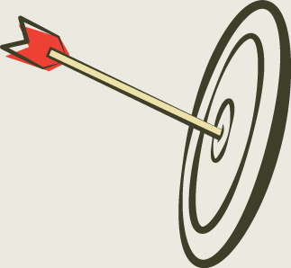

- About
- Tutorial
- Documentation
- Blog
- Help
Beautiful, DRY,
well-indented, clear markup:
templating haiku.
Latest:5.0.0 - What's New?

What is it?
Haml (HTML abstraction markup language) is based on one primary principle: markup should be beautiful. It’s not just beauty for beauty’s sake either; Haml accelerates and simplifies template creation down to veritable haiku.
Unspace Interactive and several other professional Rails shops use Haml exclusively for their projects, valuing its focus on cleanliness, readability, and production speed.
Give yourself 5 minutes to read the tutorial and then convert one of your ERB templates to Haml. Simplify. Enjoy. Laugh. 20 minutes later, you will never go back.
